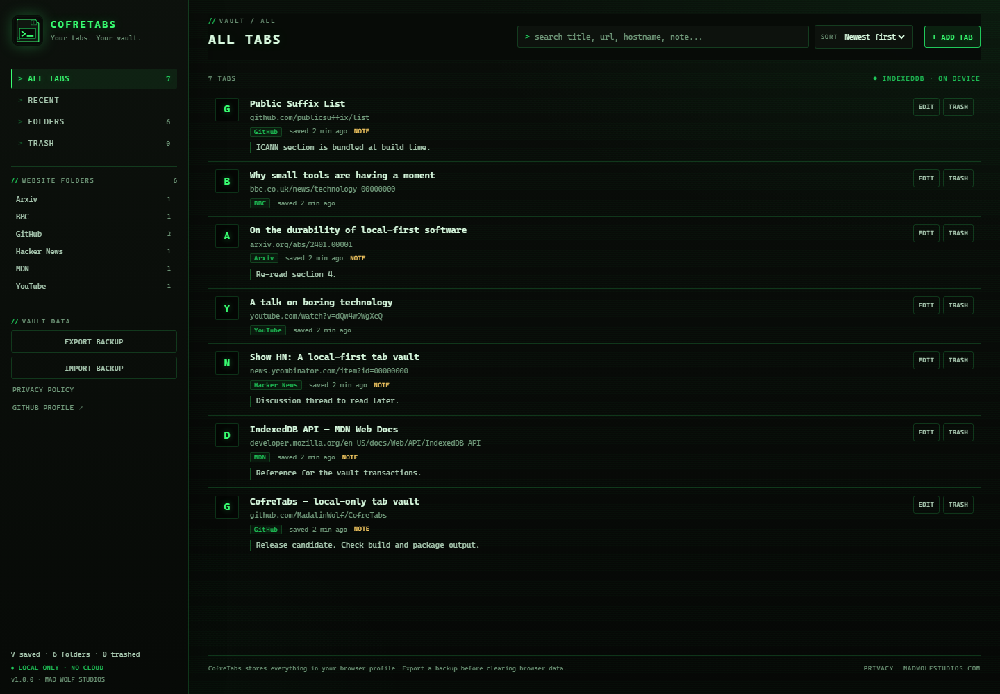

Explicit saving
Review the title, host, folder and duplicate status first. The vault changes only when you press SAVE THIS TAB.
LOCAL-ONLY TAB VAULT // V1.1.0
CofreTabs turns the tab you are reading into a permanent, searchable entry in a private vault. No account. No sync. No cloud. Just the pages you chose to keep, on the machine you chose to keep them on.
Status: v1.1.0 published on GitHub Releases. Not on the Chrome Web Store.
// detected page
The Unreasonable Effectiveness of Simple Tools
example.com/notes/simple-tools
// nothing is written until you press save
[esc] close [enter] save
// 01 — WHAT IT DOES
Built for research trails, read-later piles and the tabs you refuse to close. Deliberately small, deliberately local.
Review the title, host, folder and duplicate status first. The vault changes only when you press SAVE THIS TAB.
The save animation is tied to the real IndexedDB write. Success means saved. Failure stays a failure. No optimistic lies.
Bundled Public Suffix List rules group news.bbc.co.uk under BBC — not under co.uk.
Titles, URLs, hostnames, folders and notes. Sort by newest, oldest, title, domain or folder. Filter to Trash when needed.
Folder deletion moves tabs to Trash instead of destroying them. Permanent deletion exists — behind a confirmation.
Versioned JSON export, validated all-or-nothing import, merge or replace. Your data remains a file you own.
// REAL UI — DEMO DATA
Search, folders, notes and Trash in one local database. This capture comes from the actual extension build, populated with demo entries.

// 02 — HOW IT WORKS
The panel slides in on the right. It reads the current tab only after that click, using activeTab.
Nothing is captured automatically. Duplicate and restricted-page states are shown before you commit.
Search the library, edit notes, move folders, restore from Trash or export a backup. The vault lives in your browser profile.
// 03 — PRIVACY
No backend exists to receive your data. That is an architectural choice, not a promise in a policy footer.
Read the full privacy policy →// 04 — INSTALL
There is no store listing yet. The install path today is an unpacked build — either grab the zip from the GitHub Release or build from source.
CofreTabs-v1.1.0.zip from the v1.1.0 release and extract it (or clone the repo and run npm install + npm run build).chrome://extensions.CofreTabs-v1.1.0/ folder (or dist/ from a source build).Chrome 102+, Edge, Brave, Vivaldi or Opera. Only http(s) pages can be saved.
$ git clone https://github.com/MadalinWolf/CofreTabs.git
$ cd CofreTabs
$ npm install
$ npm run build
Built CofreTabs v1.1.0 → dist/// 05 — RELEASE STATUS
CofreTabs v1.1.0 is published as a versioned GitHub Release with a checksummed zip. Install by downloading the release package and loading it unpacked. The Chrome Web Store submission is still pending, and this site remains a static package the owner can deploy to madwolfstudios.com.